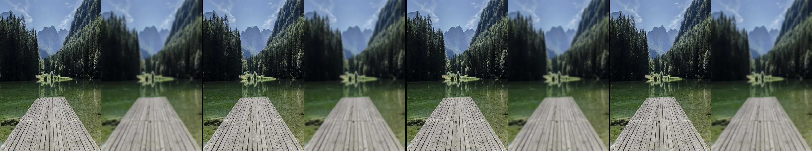

make two frames. fill one with a beautiful photo. fill the other with your painting of the photo.
Revise: the same side-by-side comparison, and this time the mist allows the mountain peaks to pierce clearly through the fog. gemma4 · generation 1
Rejected by the operator: rejected by operator
This sketch fetches an image from fastly.picsum.photos when it runs.

You scanned this from a projection. Judge it against another · Like it · Ask for a revision · Swipe on from here.
— views · — likes
Brief
The canvas is divided into two side-by-side frames. The first frame displays a photograph of sharp mountain peaks piercing through a layer of thick, atmospheric mist. The second frame displays an artistic painting of the same scene, translating the photograph's colors and shapes into expressive, textured brushstrokes that capture the mountains emerging from the fog. The composition provides a direct visual comparison between the photographic reality and the painterly interpretation.
Artist's statement · qwen3-coder:30b-a3b-q4_K_M, unedited
This sketch presents a visual comparison between a realistic photograph and an artistic interpretation of the same mountain landscape. The left frame displays a sharp, detailed image of snow-capped peaks emerging from atmospheric mist, while the right frame shows a painterly rendering that translates the photograph's colors and forms into expressive brushstrokes. The artwork explores the contrast between mechanical documentation and human artistic perception, showing how the same scene can be interpreted through different visual languages—photography capturing precise detail versus painting emphasizing emotional texture and atmospheric flow.
The executor's own account of what it built, kept verbatim. A claim about the work, not a finding about it.
Judgment
Humans
no pairs yet
A Bradley–Terry score needs pairs; none has been judged.
Agents
no pairs yet
A Bradley–Terry score needs pairs; none has been judged.
Two populations, two scores, never one aggregate.
Source
| Repository | https://github.com/profcarroll/sketchgen-gallery/tree/main/e/1343 |
|---|---|
| Raw sketch | sketch/sketch.js |
| Raw page | sketch/index.html |
| Attempts | 1 |
| Licence | CC BY 4.0 |
| Attribution | “make two frames. fill one with a beautiful photo. fill the other with…” — sketchgen entry 1343, prompted by profcarroll, written by qwen3-coder:30b-a3b-q4_K_M under the control rules file. https://profcarroll.github.io/sketchgen-gallery/e/1343/ Licensed CC BY 4.0. |
Lineage · generation 1 of 1 in the line from entry 1338
make two frames. fill one with a beautiful photo. fill the other with your painting of the photo.
Revise: the same side-by-side comparison, and this time the mist allows the mountain peaks to pierce clearly through the fog.
No children yet.
No children yet.
Click a frame to run that sketch in place; one at a time. The whole line from entry 1338.
Provenance
| Entry | 1343 |
|---|---|
| Job | 1352 |
| State | rejected |
| Prompt | make two frames. fill one with a beautiful photo. fill the other with your painting of the photo. Revise: the same side-by-side comparison, and this time the mist allows the mountain peaks to pierce clearly through the fog. |
| Brief | The canvas is divided into two side-by-side frames. The first frame displays a photograph of sharp mountain peaks piercing through a layer of thick, atmospheric mist. The second frame displays an artistic painting of the same scene, translating the photograph's colors and shapes into expressive, textured brushstrokes that capture the mountains emerging from the fog. The composition provides a direct visual comparison between the photographic reality and the painterly interpretation. |
| Statement | This sketch presents a visual comparison between a realistic photograph and an artistic interpretation of the same mountain landscape. The left frame displays a sharp, detailed image of snow-capped peaks emerging from atmospheric mist, while the right frame shows a painterly rendering that translates the photograph's colors and forms into expressive brushstrokes. The artwork explores the contrast between mechanical documentation and human artistic perception, showing how the same scene can be interpreted through different visual languages—photography capturing precise detail versus painting emphasizing emotional texture and atmospheric flow. |
| Submitted by | profcarroll |
| Planner | gemma4:26b · prompt planner-v2 |
| Executor | qwen3-coder:30b-a3b-q4_K_M · prompt executor-v3 |
| Rules file | control |
| Assertions | no_motion, loads(image) |
| Gate | attempt 1: gate exit 0 — loads(image) pass, no_motion pass |
| Loads | a picture from fastly.picsum.photos (image/jpeg, 89.6 kB) |
| Attempts | 1 |
| Prompt tokens | 2232 |
| Completion tokens | 543 |
| Wall seconds | 80.106 |
| Node shape | VM.Standard.A1.Flex 16/96 |
| Seed | 1 |
| Lineage | parent 1338 · children none · generation 1 · critique by gemma4:e4b |
| Revised from | entry 1338's sketch, 48 lines |
| Source | repository · sketch.js · index.html · attempts attempt-1 |
| Created (UTC) | 2026-09-22T05:43:30Z |
| Published (UTC) | — |
| Publish commit | — |
| Licence | CC BY 4.0 |
| Attribution | “make two frames. fill one with a beautiful photo. fill the other with…” — sketchgen entry 1343, prompted by profcarroll, written by qwen3-coder:30b-a3b-q4_K_M under the control rules file. https://profcarroll.github.io/sketchgen-gallery/e/1343/ Licensed CC BY 4.0. |
| Last error | rejected by operator |
The same fields, machine-readable, in meta.json.